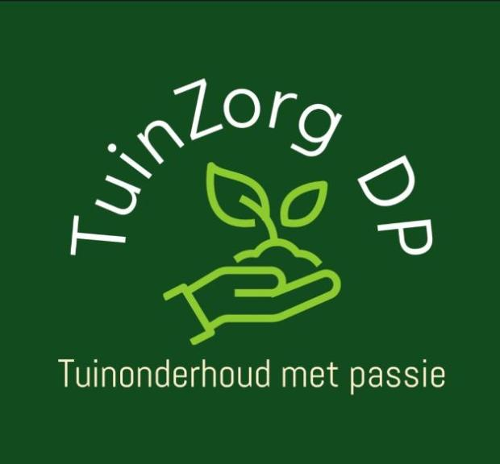

01
Tuinonderhoud
Regelmatig of eenmalig onderhoud om je tuin verzorgd en toegankelijk te houden.

TuinZorg DPTuinonderhoud met passie
Verzorgd tuinonderhoud, snoeiwerken en gazonrenovatie voor tuinen die opnieuw strak, rustig en gezond mogen aanvoelen.
Gevestigd in Gent
TuinZorg DP helpt met praktisch en zorgvuldig onderhoud: van bomen snoeien en bosmaaien tot borders opkuisen, bladblazen en gazons opnieuw in vorm brengen.
Diensten
Regelmatig of eenmalig onderhoud om je tuin verzorgd en toegankelijk te houden.
Bomen, hagen en beplanting snoeien met oog voor vorm, veiligheid en seizoen.
Onderhoud en renovatie voor gazons die opnieuw dichter, frisser en sterker mogen worden.
Hoog gras, randen en moeilijk bereikbare zones weer netjes onder controle.
Bladblazen, plantenborders opkuisen en algemeen opruimwerk rond de tuin.
Vrijblijvend bespreken wat je tuin nodig heeft?
Mail TuinZorg DPAanpak
Je bespreekt wat je tuin nodig heeft, TuinZorg DP bekijkt de werken en maakt heldere afspraken. Voor timing en offerte neem je rechtstreeks contact op.
Contact
Stuur een bericht of bel rechtstreeks. Voeg gerust enkele foto's van de tuin toe via mail zodat de vraag meteen duidelijk is.